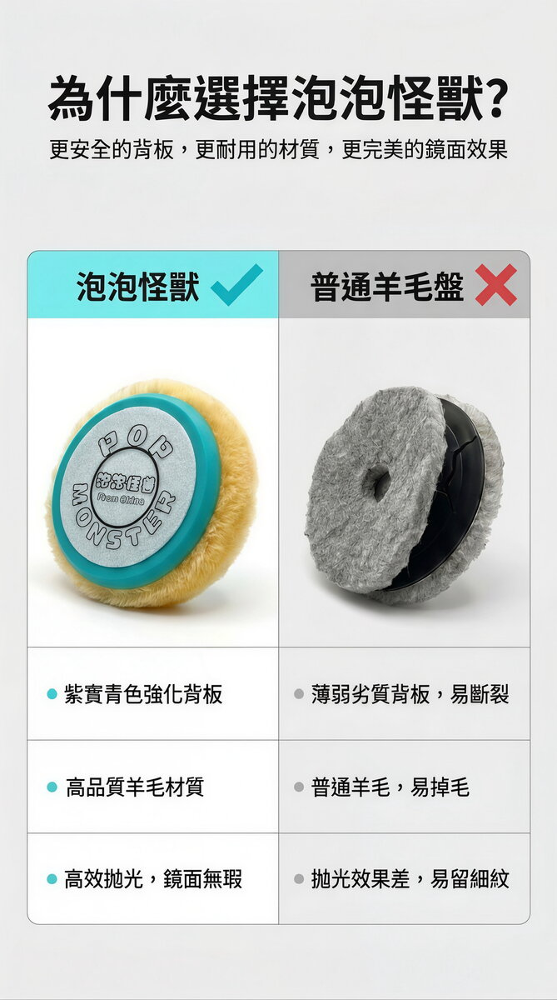

RO Custom Wool Pad (for soft black paint)
RO Custom Wool Pad, made for soft black paint and piano black finishes. Fits RO, GA, and DA machines. Ask us on WhatsApp first for pad size and speed specs.
Add to cart → fill in your details → send your order on WhatsApp; we confirm on WhatsApp whether each item can ship to your country and what shipping costs, then you pay
Product description
Soft black paint and piano black finishes are the toughest to work on: pads shed fiber and leave marks, the panel heats up fast, and going after a deep scratch in one pass risks cutting through the paint. A lot of detailers just won't risk it. This RO Custom Wool Pad is built specifically for high-end cars with soft black paint and other delicate finishes. It fits RO, GA, and DA machines. We haven't published official numbers yet for pad diameter, hardness, or recommended speed, so message us on WhatsApp before you choose a pad or pair it with a compound.
Specs
- Compatible surfaces
- Soft black paint, soft paint, and other delicate finishes
- Compatible machines
- RO / GA / DA — all machine types
- What's included
- Ships as a single pad or a 10-pack
Things to know
- The first time you use it, test a small hidden area first, check how the paint reacts, then work the full panel.
- Don't dwell in one spot too long, and keep an eye on pad and paint temperature the whole time.
- Pad diameter, hardness rating, recommended safe speed, and pack quantity aren't listed yet. If you need those numbers to decide, message us on WhatsApp before you order.
- Set your speed and pressure based on your machine's manual and the actual condition of the paint. Don't just copy the procedure from another product.
FAQ
Real wool cuts the hardest but sheds fiber easily and heats up fast. Synthetic wool cuts strong and stays controllable, without shedding or heat buildup, which makes it a better fit for RO machines and soft black paint. This pad uses synthetic wool, which pro detailers recommend.
Yes. Soft black paint (without a clear coat) is the most fragile kind. A regular wool pad heats up too fast and can burn the paint. This pad's high-flex backing plate and synthetic wool construction cut that risk significantly.
Good-quality synthetic wool lasts 50-80 uses with normal care. Replace it once the fibers are noticeably worn down or uneven, or cutting power drops off. Washing it right after each use extends its life.
Application guide
Similar products


RO Custom Wool Pad (for soft black paint)
If you're ready to buy, add it to your cart and send your order on WhatsApp. If you're not sure it's right for your car, ask us on WhatsApp first before you order.